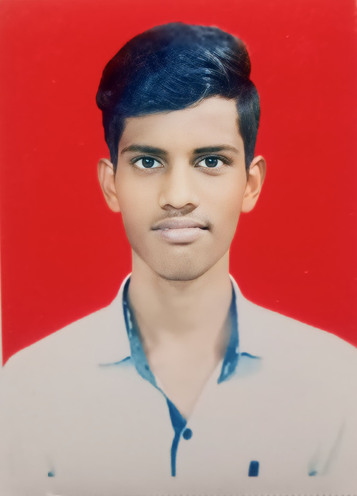

Ravichandra Helave

Summary
Skilled in C, C++, Python, microcontrollers, IoT, and full-stack development, eager to apply knowledge in real-world projects.
Education
Diploma [ENTC]-MSBTE(2020-2023)
Bachelor of Technology [ENTC]-University of Solapur(2023-2026)
Work Experience
Skills
- Full-Stack Web Development⭐️⭐️⭐️⭐️⭐️
- Embedded Systems Development⭐️⭐️⭐️⭐️
- C/C++ and Python Programming⭐️⭐️⭐️
- IoT and Microcontroller Integration⭐️⭐️⭐️⭐️
Awards and Certifications
- Full Stack Web Development Certification – Udemy
- Secured 2nd Rank in Diploma (Electronics and Telecommunication)
- Secured 3rd Rank in 10th Grade (SSC Board)
Others